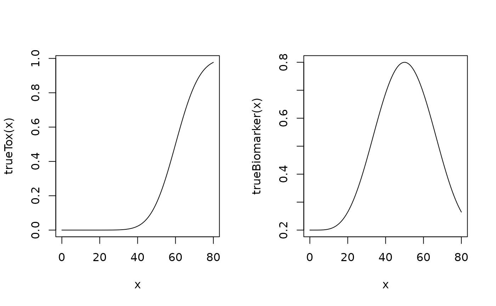

Simulate outcomes from a dual-endpoint design
Source:R/Design-methods.R
simulate-DualDesign-method.Rd![[Stable]](figures/lifecycle-stable.svg)
Usage
# S4 method for class 'DualDesign'
simulate(
object,
nsim = 1L,
seed = NULL,
trueTox,
trueBiomarker,
args = NULL,
sigma2W,
rho = 0,
firstSeparate = FALSE,
mcmcOptions = McmcOptions(),
parallel = FALSE,
nCores = min(parallel::detectCores(), 5),
derive = list(),
...
)Arguments
- object
the
DualDesignobject we want to simulate data from- nsim
(
count)
the number of simulations (default: 1)- seed
see
set_seed()- trueTox
(
function)
a function which takes as input a dose (vector) and returns the true probability (vector) for toxicity. Additional arguments can be supplied inargs.- trueBiomarker
(
function)
a function which takes as input a dose (vector) and returns the true biomarker level (vector). Additional arguments can be supplied inargs.- args
(
data.frame)
data frame with arguments for thetrueToxandtrueBiomarkerfunction. The column names correspond to the argument names, the rows to the values of the arguments. The rows are appropriately recycled in thensimsimulations.- sigma2W
(
number)
variance for the biomarker measurements- rho
(
number)
correlation between toxicity and biomarker measurements (default: 0)- firstSeparate
(
flag)
enroll the first patient separately from the rest of the cohort? (not default) If yes, the cohort will be closed if a DLT occurs in this patient.- mcmcOptions
(McmcOptions)
object of classMcmcOptions, giving the MCMC options for each evaluation in the trial. By default, the standard options are used- parallel
(
flag)
should the simulation runs be parallelized across the clusters of the computer? (not default)- nCores
(
count)
how many cores should be used for parallel computing? Defaults to the number of cores on the machine, maximum 5.- derive
(
list)
a named list of functions which derives statistics, based on the vector of posterior MTD samples. Each list element must therefore accept one and only one argument, which is a numeric vector, and return a number.- ...
not used
Value
an object of class DualSimulations
Note
Backfill cohorts are not yet implemented and therefore will lead to an error if used
in the DualDesign object.
Examples
# nolint start
# Define the dose-grid
emptydata <- DataDual(doseGrid = c(1, 3, 5, 10, 15, 20, 25, 40, 50, 80, 100))
# Initialize the CRM model
model <- DualEndpointRW(
mean = c(0, 1),
cov = matrix(c(1, 0, 0, 1), nrow = 2),
sigma2betaW = 0.01,
sigma2W = c(a = 0.1, b = 0.1),
use_log_dose = TRUE,
ref_dose = 2,
rho = c(a = 1, b = 1),
rw1 = TRUE
)
# Choose the rule for selecting the next dose
myNextBest <- NextBestDualEndpoint(
target = c(0.9, 1),
overdose = c(0.35, 1),
max_overdose_prob = 0.25
)
# Choose the rule for the cohort-size
mySize1 <- CohortSizeRange(
intervals = c(0, 30),
cohort_size = c(1, 3)
)
mySize2 <- CohortSizeDLT(
intervals = c(0, 1),
cohort_size = c(1, 3)
)
mySize <- maxSize(mySize1, mySize2)
# Choose the rule for stopping
myStopping4 <- StoppingTargetBiomarker(
target = c(0.9, 1),
prob = 0.5
)
myStopping <- myStopping4 | StoppingMinPatients(10) | StoppingMissingDose()
# Choose the rule for dose increments
myIncrements <- IncrementsRelative(
intervals = c(0, 20),
increments = c(1, 0.33)
)
# Initialize the design
design <- DualDesign(
model = model,
data = emptydata,
nextBest = myNextBest,
stopping = myStopping,
increments = myIncrements,
cohort_size = mySize,
startingDose = 3
)
# define scenarios for the TRUE toxicity and efficacy profiles
betaMod <- function(dose, e0, eMax, delta1, delta2, scal) {
maxDens <- (delta1^delta1) *
(delta2^delta2) /
((delta1 + delta2)^(delta1 + delta2))
dose <- dose / scal
e0 + eMax / maxDens * (dose^delta1) * (1 - dose)^delta2
}
trueBiomarker <- function(dose) {
betaMod(
dose,
e0 = 0.2,
eMax = 0.6,
delta1 = 5,
delta2 = 5 * 0.5 / 0.5,
scal = 100
)
}
trueTox <- function(dose) {
pnorm((dose - 60) / 10)
}
# Draw the TRUE profiles
par(mfrow = c(1, 2))
curve(trueTox(x), from = 0, to = 80)
curve(trueBiomarker(x), from = 0, to = 80)

# Run the simulation on the desired design
# We only generate 1 trial outcome here for illustration, for the actual study
# this should be increased of course, similarly for the McmcOptions -
# they also need to be increased.
# \donttest{
mySims <- simulate(
design,
trueTox = trueTox,
trueBiomarker = trueBiomarker,
sigma2W = 0.01,
rho = 0,
nsim = 1,
parallel = FALSE,
seed = 3,
startingDose = 6,
mcmcOptions = McmcOptions(
burnin = 10,
step = 1,
samples = 100
)
)
# }
# nolint end